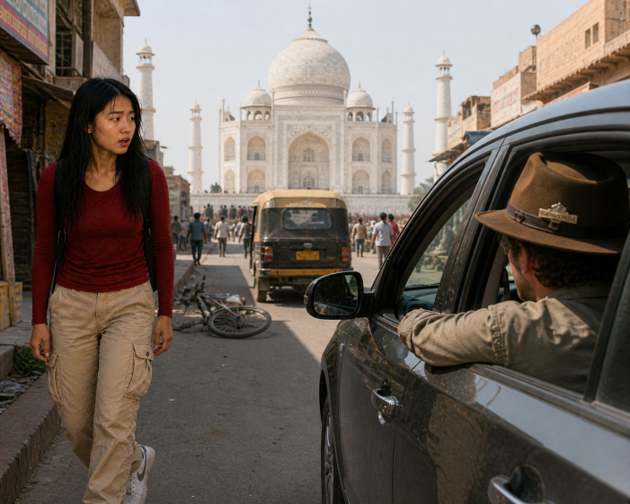
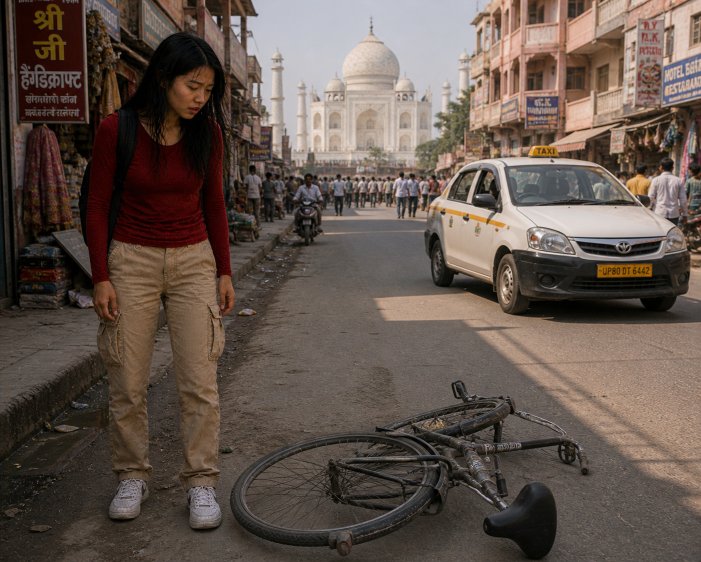
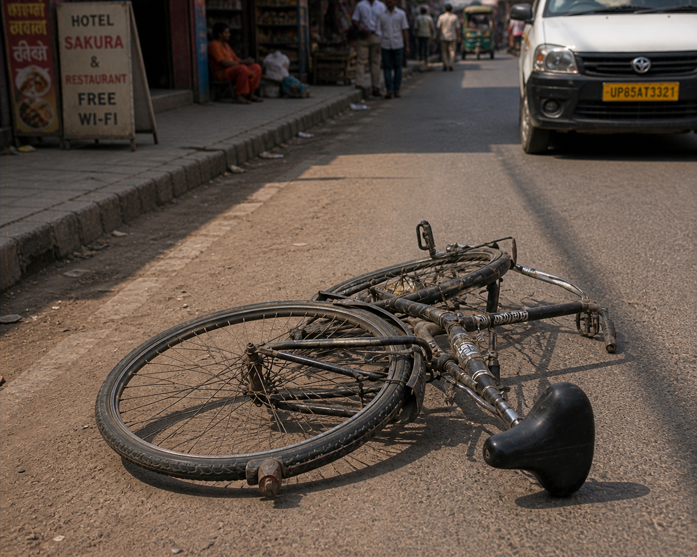
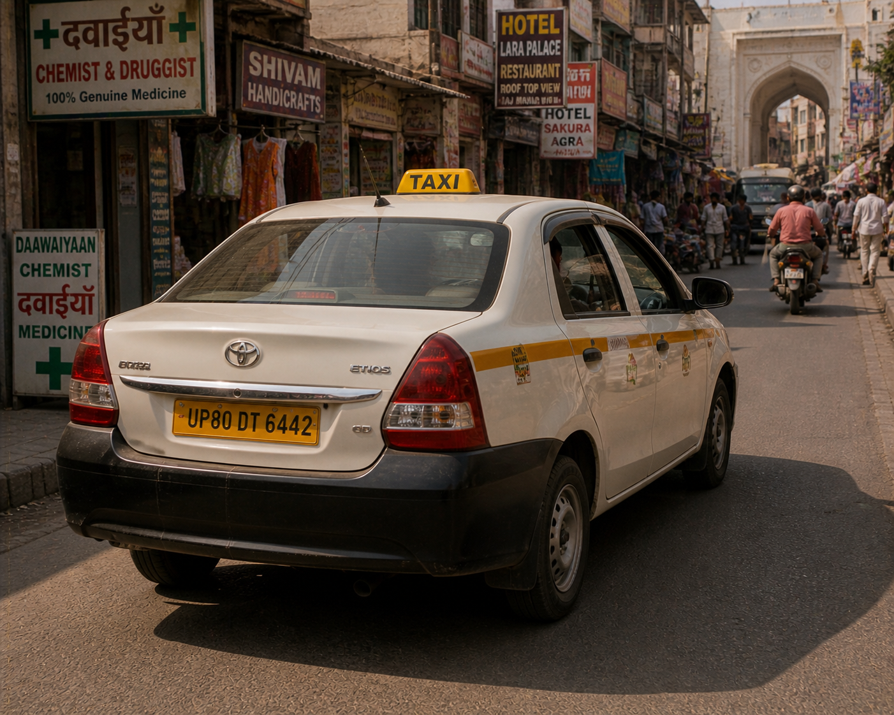

| Patricia’s heart skipped as she spotted the man through the dusty window of the car. The hat—there was no mistake. It was her uncle’s favourite, the one with the small Toowoomba pin she had given him for Christmas. The car rolled slowly through the tight, crowded streets near the Taj Mahal, weaving between pedestrians, motorbikes, and vendors. Just ahead of her, a bicycle lay abandoned on the road, while a taxi pushed its way through the traffic, its horn blaring as it disappeared around a narrow corner. Patricia’s mind raced—this was her chance. |  |
 |
She stepped back into the shadows, weighing her options quickly. The bike would be fast and agile, perfect for slipping through the narrow alleyways where the car might struggle to go. But the taxi offered speed and distance—if she could catch it in time, she might follow the car without losing sight of it. The streets twisted in every direction, full of noise and movement, and whichever choice she made would determine whether she caught up… or lost the trail completely. |
 Follow on the Bike |
 Follow in the Taxi |